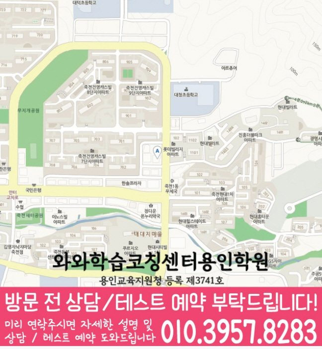

단순히 진도를 따라가기보다, 단어·문장 이해도와 문법 적용, 독해 흐름을 먼저 확인해 필요한 학습 순서를 잡습니다.
LOCAL CHILD GUIDE
죽전동 초4 영어학원
대구 달서구 죽전동에서 초등 4학년 영어학원을 찾는 학생을 위해 어휘, 기초 문법, 문장 독해, 오답 재학습과 플래너 관리를 함께 안내합니다.
죽전동초4 영어 학습 안내
4.8학부모 후기 평점


LOCAL ACADEMY GUIDE
죽전동 초4 영어학원 와와학습코칭센터 대구장기점 영어·문법·독해 학습 안내
대구 달서구 죽전동에서 초등 4학년 영어학원을 찾는 학생을 위해, 현재 실력 진단부터 기초 문법 정리, 독해 습관과 서술형·문제풀이까지 이어지는 학습 흐름을 안내합니다. 와와학습코칭센터는 학생별 약점을 빠르게 파악해 개념을 탄탄히 하고, 오답을 다시 학습으로 연결하여 꾸준히 실력이 쌓이도록 돕습니다.
죽전동 초4 영어수업의 핵심 포인트
문법은 개념-예문-유형으로 연결하고, 어휘는 활용 중심으로 확장하며, 독해는 핵심 문장 파악 훈련으로 정확도를 높입니다.
선생님 특징
문제 정답만 설명하지 않고, 학생이 어디에서 막혔는지(단어 이해, 문법 선택, 독해 해석)를 구체적으로 확인합니다.
숙제, 복습, 오답 정리 습관을 지도해 초등 4학년이 스스로 공부하는 힘을 만들도록 코칭합니다.
수업 진행방식
1. 현재 수준 확인
초4 과정에서 자주 흔들리는 문법 포인트, 단어 범위, 독해 유형을 점검해 부족한 단원을 선별합니다.
2. 개념 정리와 단계별 유형 학습
문법·어휘를 먼저 정리한 뒤, 기초 문제 → 서술형·어휘 활용 → 독해 적용 순으로 단계적으로 훈련합니다.
3. 오답 관리와 학습 피드백
오답을 “다음엔 맞히기”로 끝내지 않고, 틀린 이유를 기준으로 다시 푸는 재학습 루틴을 제공합니다.
학년별 학습 전략(초등 영어)
초등 1~2학년
- 기초 단어·문장 구조를 반복 노출로 빠르게 안정화합니다.
- 발음과 기본 해석 습관을 잡아 영어 자신감을 키웁니다.
초등 3학년
- 문법의 기본 흐름(시제·기초 문장)을 이해 중심으로 정리합니다.
- 짧은 문장 독해부터 문장 해석 원리를 적용합니다.
초등 4학년(주제 학습)
- 문법 개념을 예문과 유형 문제로 바로 연결해 실수 구간을 줄입니다.
- 독해는 핵심 문장 찾기·지문 해석 순서를 훈련하고, 서술형은 근거 문장 중심으로 연습합니다.
초등 5~6학년
- 중상위권으로 넘어가기 위한 어휘·문법 심화와 유형 반복을 진행합니다.
- 실전 독해와 문항별 풀이 전략(시간 배분, 오답 패턴)을 집중 관리합니다.
죽전동 초4 영어학원으로 고민 중이라면, 와와학습코칭센터 대구장기점이 학생의 현재 수준을 기준으로 영어(문법·어휘·독해) 학습 로드맵을 세워드립니다. 상담을 통해 수업 방향과 오답 관리 방법까지 자세히 안내드리겠습니다.
센터 위치 안내
주소
대구 달서구 장기로 252 장기협성휴포레 2층 209,210
오시는 길
~ 와와학습코칭센터 대구장기점 위치는 (대구 달서구 장기로 252 장기협성휴포레 2층 209,210)입니다. 버스정류장(장동초등학교앞) 바로 앞 대로변에 있습니다. 장기협성휴포레 상가 2층 (1층에 한솥 도시락이 있습니다)
주요 타깃학교(이외 학교도 수업 가능)
초등 타깃학교
장동초
장기초
성당초
중등 타깃학교
원화중
고등 타깃학교
정보 준비중
과목별 수강 가능 학년
국어
초2
초3
초4
초5
초6
중1
중2
중3
고1
영어
초2
초3
초4
초5
초6
중1
중2
중3
고1
고2
수학
초2
초3
초4
초5
초6
중1
중2
중3
고1
고2
과학
중1
중2
중3
사회
중1
중2
중3
학원 등록 정보
수업료는 어떻게 되나요? ✨
A - 서울 (1회 90-100분 수업기준)
| 횟수 | 초등 | 중등 | 고등 |
|---|---|---|---|
| 주 3회 | 249,000 | 266,000 | 299,000 |
| 주 4회 | 319,000 | 341,000 | 384,000 |
| 주 5회 | 389,000 | 416,000 | 469,000 |
B - 서울 외 지점 (1회 90-100분 수업기준)
| 횟수 | 초등 | 중등 | 고등 |
|---|---|---|---|
| 주 3회 | 219,000 | 236,000 | 269,000 |
| 주 4회 | 279,000 | 301,000 | 344,000 |
| 주 5회 | 339,000 | 366,000 | 419,000 |
* 수업료는 지역 및 횟수에 따라 일부 차이가 있을 수 있습니다.
FAQ & PARENT REVIEWS
죽전동 초4 영어학원 상담 전 자주 묻는 질문과 학부모 후기
죽전동에서 초4 영어학원을 알아볼 때 자주 확인하는 질문과 학습관리 후기를 함께 정리했습니다.
죽전동 초4 영어학원에서는 어떤 내용을 상담하나요?
초등 4학년 영어의 현재 어휘 수준, 기초 문법, 문장 읽기, 독해 습관과 학교 진도를 함께 확인합니다.
초4 영어는 단어와 문법부터 다시 봐도 되나요?
가능합니다. 어휘와 문장 구조가 흔들리면 독해와 서술형에서도 어려움이 생길 수 있어 필요한 경우 기초부터 다시 점검합니다.
학교 영어 진도와도 연결해서 관리하나요?
네. 학교 진도와 단원평가 흐름을 확인하고, 학생에게 필요한 어휘 정리, 문법 개념, 문장 독해와 오답 재학습을 함께 구성합니다.
죽전동 초4 영어학원 선택 시 무엇을 먼저 봐야 하나요?
위치만 보기보다 현재 어휘 수준, 문장 이해 습관, 문법 개념, 오답 피드백과 학습 루틴 관리가 함께 이루어지는지 확인하는 것이 좋습니다.
상담 전에 어떤 자료를 준비하면 좋나요?
현재 사용하는 영어 교재, 단어장, 학교 진도, 자주 틀리는 문제, 아이가 어려워하는 문장·독해 유형을 알려주시면 상담에 도움이 됩니다.
LOCAL PAGE LINKS
죽전동학원 관련 학습 페이지 바로가기
같은 동네의 학습 안내 페이지를 함께 확인해보세요.